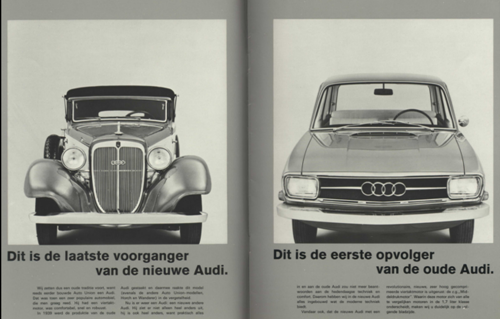

Oorsprong
De oprichter van Audi is August Horch, een visionair Duits ingenieur en ondernemer die een belangrijke rol heeft gespeeld in de ontwikkeling van de auto-industrie. August Horch werd geboren op 12 oktober 1868, in Winningen, Duitsland. Horch studeerde werktuigbouwkunde aan de Königliche Technische Hochschule in München en begon zijn carrière in de auto-industrie in 1896. Hij werkte aanvankelijk voor Karl Benz, een pionier op het gebied van automobieltechniek. In 1899 richtte August Horch zijn eerste bedrijf op, A. Horch & Cie. Motorwagenwerke AG, in Keulen. samen met zijn vriend Franz Fikentscher Onder het merk Audi zette August Horch zijn streven naar technologische vooruitgang voort. Audi werd bekend om zijn innovatieve technologieën en hoogwaardige voertuigen. Het bedrijf maakte bijvoorbeeld naam met de introductie van de eerste Duitse productieauto met een zescilindermotor in 1914.
nieuwe tijdperk
Audi is relatief gezien een nieuwkomer in de auto-industrie. Het bedrijf werd in 1969 opgericht, maar is eigenlijk al veel ouder. Het heeft een complexe geschiedenis en komt voort uit Auto Union (1932), wat weer is ontstaan uit Audi (1909), DKW (1916), Horch (1904) en Wanderer (1911). De vier ringen van het logo staan voor die vier merken. Vroeg succes vond Audi met de 80 en de 100. Begin jaren tachtig zette de fabrikant uit Neckarsulm krachtig in op vierwielaandrijving. Het Quattro-systeem werd voor het eerst ingebouwd in de gelijknamige coupé. Met die auto zette Audi meteen het Wereldkampioenschap Rally op zijn kop. In de laatste vijfentwintig jaar is het merk geëvolueerd tot een volwaardig premiummerk, met onder meer de A4, A6, A8, TT en R8.

Het moderne Audi-tijdperk werd eind 1968 ingeluid met de onthulling van de grote 100. Drie jaar later volgde de 80, een model dat door Volkswagen op de markt werd gebracht als Passat. De kleinere 50 (1974) was niet bijzonder succesvol, maar toch een belangrijke auto. Hij was de eerste compacte hatchback uit Duitsland en stond aan de basis van de Volkswagen Polo. Een echte opvolger van de 50 kwam er pas in 2010, toen de A1 werd geïntroduceerd.